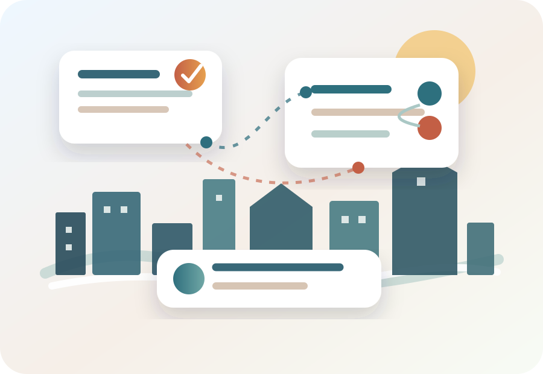

HUMANE-LLM Workshop
Workshop on Human-Centered and Responsible LLMs for Agency-Preserving Intelligent User Interfaces.
HUMANE-LLM is a focused forum for studying how LLM-based IUIs can be designed, evaluated, and governed in ways that remain human-centered, controllable, accountable, sustainable, and aligned with users’ needs and values.

Why this workshop?
Large Language Models are becoming a core technology for a new generation of Intelligent User Interfaces. They enable interfaces that interpret natural language, maintain context, personalize responses, generate explanations, support recommendation and decision-making, and coordinate tool-using or agentic workflows.
At the same time, interactive, adaptive, and personalized LLM-based interfaces can influence how users search, decide, learn, communicate, and act. HUMANE-LLM puts user agency, appropriate reliance, transparency, contestability, safety, fairness, privacy, accountability, and resource-aware deployment at the center of the conversation.
Workshop orientation
The workshop connects system-level IUI research with risk- and trust-oriented research on responsible AI. It welcomes technical, empirical, design-oriented, and position contributions from IUI, HCI, user modelling, recommender systems, NLP, responsible AI, and applied domains.
Topics of interest
System-level design, user modelling, and interaction
LLM-based user modelling, preference modelling, personalization, adaptive interfaces, conversational and multimodal interaction, recommender interfaces, decision-support tools, educational and healthcare applications, and mixed-initiative systems.
LLM-based agents, workflows, and intelligent interface architectures
LLM-powered assistants, tool-using agents, multi-agent systems, retrieval-augmented interfaces, long-term memory, context management, and architectures that combine LLMs with user profiles, tools, knowledge bases, sensors, or domain resources.
Risk, responsibility, safety, and alignment
Risks that arise when LLMs influence user choices, recommendations, decisions, or actions, including hallucination, misinformation, unsafe tool use, prompt injection, memory risks, over-reliance, manipulation, loss of agency, and inappropriate delegation.
Fairness, transparency, privacy, and contestability
Fair and privacy-preserving personalization, bias and stereotyping in adaptive interfaces, uncertainty and limitation communication, explainable recommendations and decisions, auditability, and mechanisms for users to inspect, question, correct, or contest system behavior.
Human-centered evaluation, governance, and sustainable deployment
User studies, field deployments, longitudinal evaluation, benchmarks, metrics for agency, trust calibration, cognitive load, fairness, privacy, task success, and well-being, plus resource-aware deployment strategies.